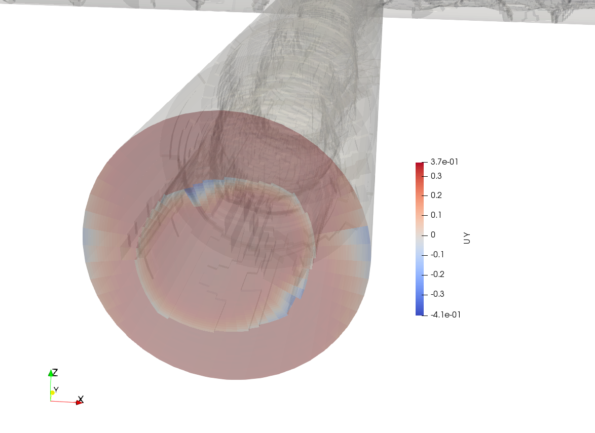
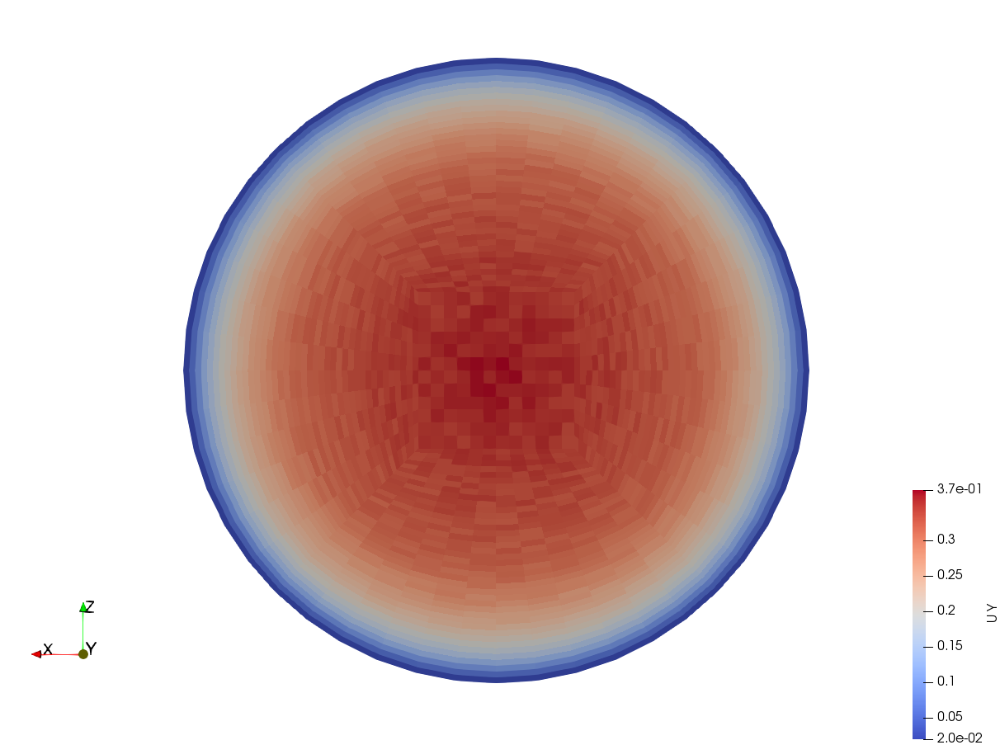

如何骗OpenFOAM
timeDir篇
如果小心输出时间步全部刚好差了0.01怎么办，例如[5,7]变成了[5.01,7.01]，timeDir里面的U,p都有个冠冕堂皇的location的值对应时间。但其实可以把目录5.01改成5，7.01改成7，这时比如要续算，solver便认为对应的时间步其实是5和7。似乎sample这些utility也可以这样骗[待确认]。
一句话：外面的目录名是个“货真价实”的幌子，可以欺骗solver和utility
如何被OpenFOAM骗
setFields
setFields用于在internalField里面写一个值。选择区域最常用的估计是boxToCell，但定义box有格式1
2
3box (x1 y1 z1) (x2 y2 z2);
// 这里必须有 x1 < x2, y1 < y2, z1 < z2
如果不符合上述规范，不会有报错，但不会在internalField里面有写任何的值
这里给出一个符合规范的setFieldsDict1
2
3
4
5
6
7
8
9
10
11
12
13
14
15
16
17
18
19
20
21
22
23
24
25
26FoamFile
{
version 2.0;
format ascii;
class dictionary;
location "system";
object setFieldsDict;
}
// * * * * * * * * * * * * * * * * * * * * * * * * * * * * * * * * * * * * * //
defaultFieldValues
(
volScalarFieldValue T 0
);
regions
(
boxToCell
{
box (-0.004 -0.08 -0.004) (0.004 -0.004 0.004);
fieldValues
(
volScalarFieldValue T 1
);
}
);
probes
OpenFOAM本身的probes如果刚好碰上网格边上会有warning
属于functionObjects，在simu的同时运行，如果想要postProcssing，用execFlow…，但是：需要在constrolDict里面加入,自己写的BC会有奇怪报错…
对策：用wyldckat写的，摘干净的最通用的ExecFunctionObjects，把所有的functionObject都放在system/system/controlDict.functions，这样就可以分开了
reconstructPar与decomposePar
这俩不互为反函数，如果要用这种方式完成binary和ascii的转换，一定double check BC，因为BC可能被改写
一句话：reconstructPar/decomposePar 一定要看好BC
reconstructed case or decomposed case
paraview中有这个选项，然而，经历reconstructPar或者decomposePar后BC可能被篡改，所以单纯看边界的话有可能会被吓倒在地，怎么可能！同一个时间步decompose情况下用paraview看BC上的值好好的，结果reconstructPar之后paraview一看……面目全非！这种差异在numberOfSubdomains更容易出现(例如120)，而设置成4就有可能没问题，可能可以算作bug。当然也许是我写出来的bug，毕竟有的边界value要生成随机数，我随机种子又没变。
一句话：当你看到reconstruct之后的BC不对的时候，即使processor*已经被清空了，此时也不用慌，再一次decomposePar帮你恢复BC（至于numberOfSubdomains设置为多少，最好跟并行算的时候一样吧）。即使又出了什么幺蛾子BC的值不能恢复，至少internalField的值不会被动到
上图，这个就是我并行120个核算出来之后想都没想就reconstructPar的效果，一脸懵

但把原数据也就是放在processor*里面的数据用paraview来看的时候就变成了下图，用numberOfSubdomains=120再重新decomposePar也是一样的效果

同一个类的不同变种编译为不同名字的lib
如上，如果想要将多个lib混用在一个case里面，在system/controlDict里面都加入lib是必须的，但其实这样不行，做不到混用。如何做到呢？需要修改类的名字，并与makePatchTypeField(fvPatchVectorField, pVFvPatchVectorField2Dpf_Port1)这个macro function对应，这样不仅lib名字不同其实里面的类也不同，这样就可以混用了。
cyclic
U,p设置周期性条件后，在生成的数据里type为cyclic你会发现U,p都没有value，仅有一个type (phi却有，也是cyclic类型).那为啥我用patchIntegrate U inlet又不是零呢？经过仔细地看源码和比对1
2
3
4
5
6
7
8
9
10
11
12
13
14
15
16
17
18
19
20
21
22
23
24
25
26
27
28
29
30
31
32
33// 读入U，找到cyclic对应的patchLabel
Info << U.boundaryField()[patchLabel] << endl;
/*
你猜输出什么？
type cyclic;
仅有type！没有value？不过，读入的就是这样的数据(volVectorField.boundaryField()[cyclic patch])，输出这样的数据也在情理之中
*/
vectorField& Ub_cyclic = U.boundaryField()[patchLabel]
Info << Ub_cyclic << endl;
/*
看输出...就有了，不过vectorField有type，这个似乎也不是特别有道理，毕竟vectorField仅仅是List<vector>
type cyclic;
16900
(
...
...
...
)
*/
// 参照patchIntegrate.C，里面没有输出整个List而仅仅输出sum；于是我在同样的patch上面求sum输出，计算结果是一样的
Info << sum(U.boundaryField()[patchLabel]) << endl;
Info << sum(Ub_cyclic) << endl;
/*
(11560.70065 80.71560542 3.732255509)
(11560.70065 80.71560542 3.732255509)
*/
// 所以可能是GeometricBoundaryField类对cyclic type输出的问题？？
这里得出的结论是：U和p在数据文件里面，boundaryField项的其中一个patch上有可能仅有type（例如cyclic），但没有value，这不意味着U.boundaryField()[cyclic patch]上面没有值。简单地来说：当你看数据文件里面边界上没有值，并不是真的没有值，边界上还可以算通量呢！
PS : phi同为cyclic类型，但边界上却有值，且value写在数据文件里